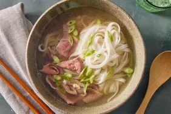

PHO

Description
This beef pho features a comforting, richly-seasoned meat broth ladled over rice noodles and thinly sliced sirloin.
Serve with hoisin, Sriracha, green onion, cilantro, bean sprouts, basil, and lime.
ingredients
- Beef bones and tough beef cuts
- Flat rice noodles
- Aromatics
- Spices
Steps
- Gather all ingredients.
- Make broth: Place beef bones in a 9-quart (or larger) pot; season with 1 teaspoon salt. Pour water into the pot and bring to a boil. Reduce heat and simmer broth for about 2 hours.